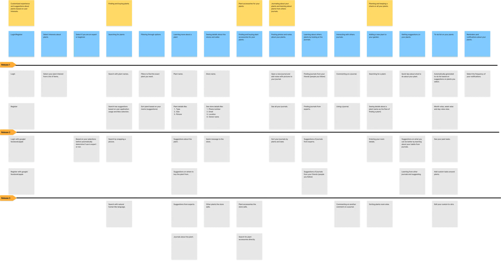
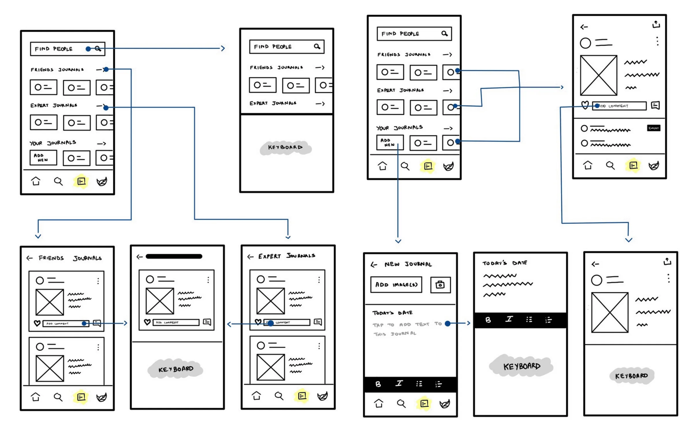
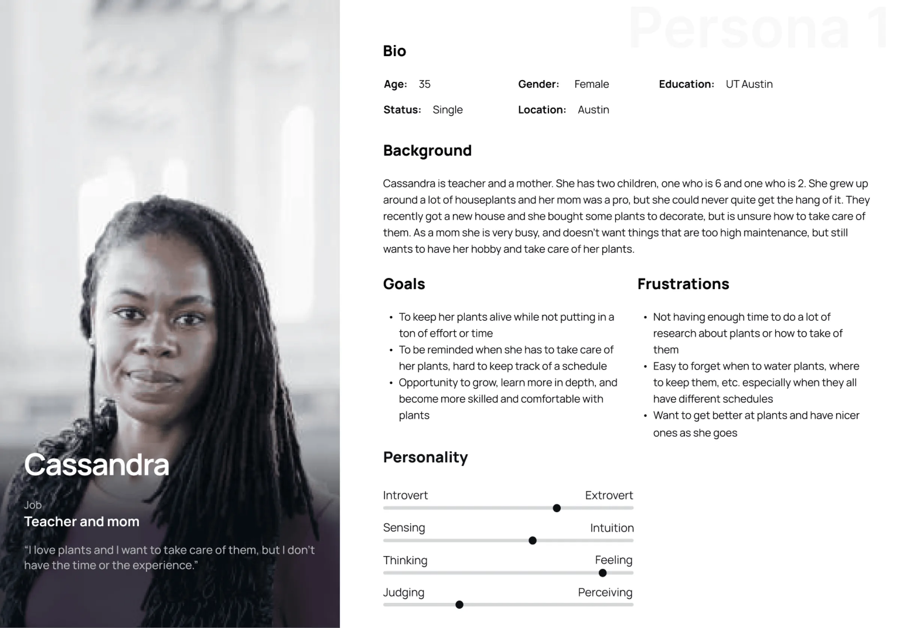
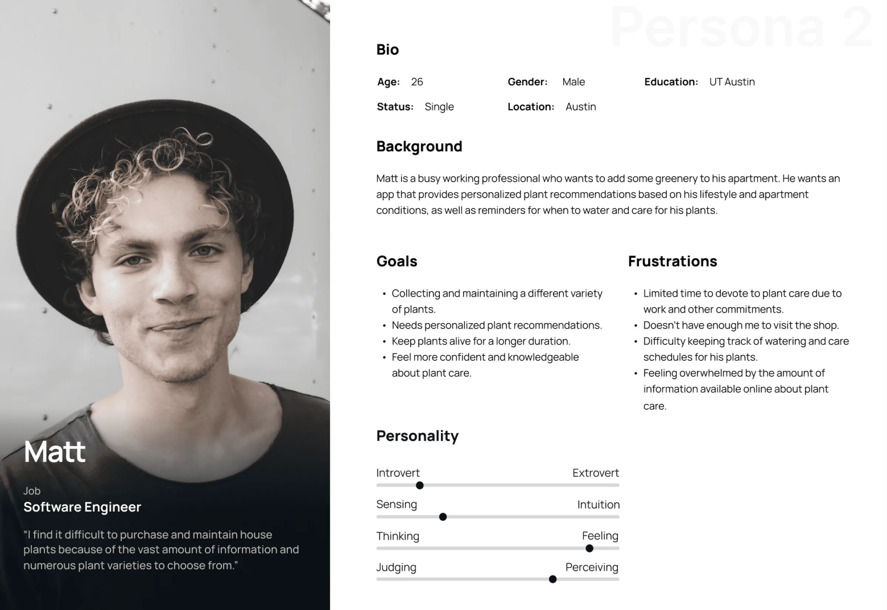
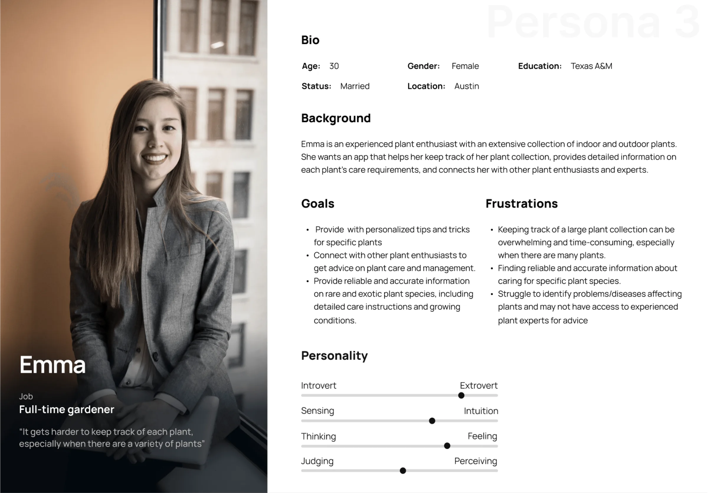
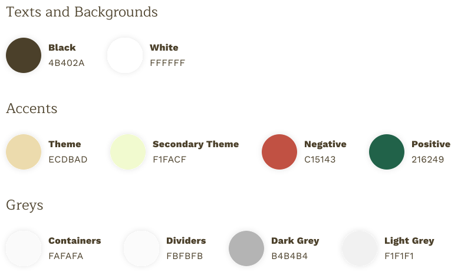
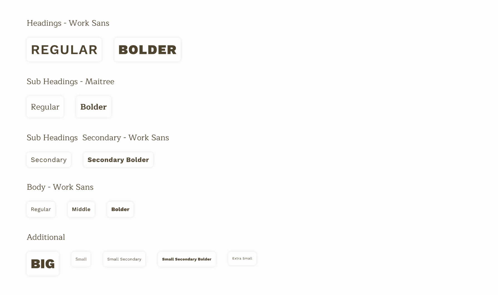
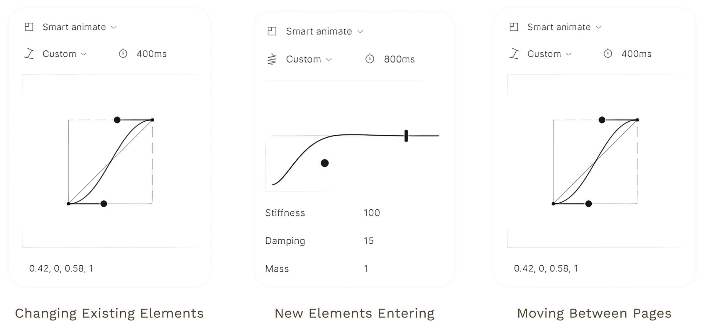
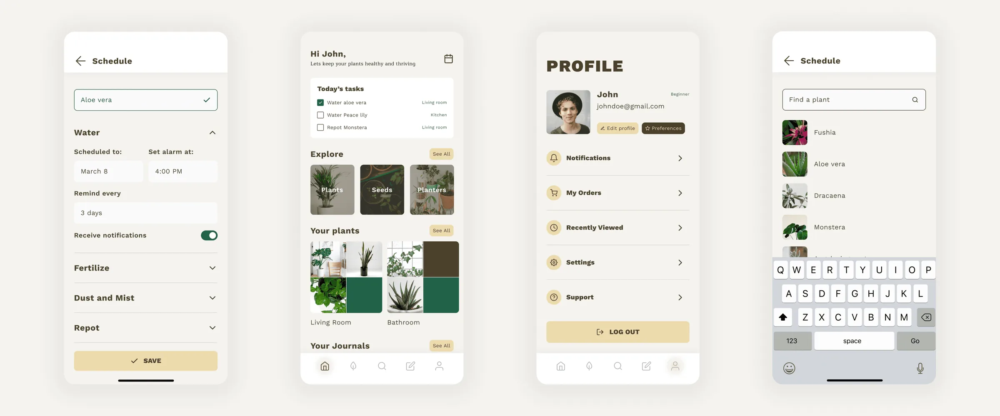
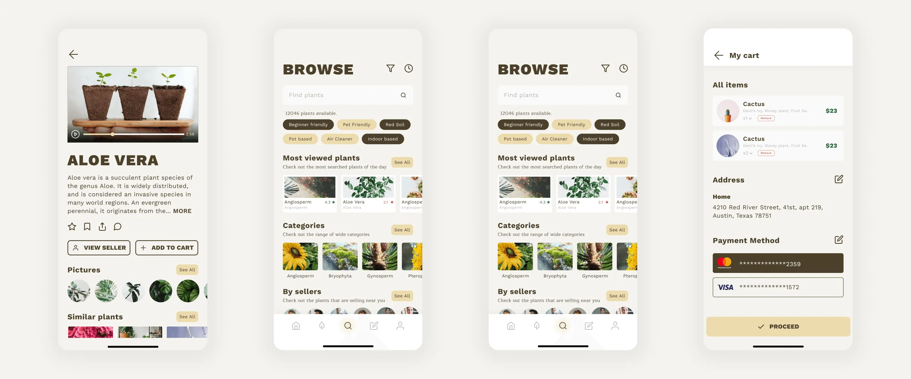

← Case Studies(09 / 14)

Planteria
A plant care app that learns from its community
Design SystemsUsability TestingUX DesignResearch
Not everyone like's to read to much nowadays (thanks TikTok). See a comic strip?
Timeline2023
RoleProduct Designer, Buses & Cabs
ContextProduct Designer
ToolsSketch · After Effects · Illustrator
ToolsFigma · After Effects · Illustrator
Users Tested8+
The Problem
People who buy plants mostly don't know how to keep them alive, and the available information is a mess; contradictory, scattered, rarely specific to the plant in front of you.
Our idea had two halves: structure that information properly, then build a community so people posting about how they grow feed the loop and the next person gets better answers.
Research
Competitive Audit
We studied two products closely. Planta and Nature ID; building a feature list with screenshots to establish a baseline of what people already expect versus where something could stand out.
Story Mapping
Ideas (everything, good or bad), Product Goals (merged into real-world actions), Users (scenarios), and Personas — Cassandra, time-poor and curious; Matt, new and interested; Emma, experienced and passionate.
Ideas (everything, good or bad), Product Goals (merged into real-world actions), Users (scenarios)
Ideas (everything, good or bad), Product Goals (merged into real-world actions), Users (scenarios), and Personas — Cassandra, time-poor and curious; Matt, new and interested; Emma, experienced and passionate.
Feature Priority Matrix
Feature priority came from where personas overlapped, not from opinion. If all three needed something, it shipped first.


01 / 02
Understading the users
Cassandra
Time-poor and curious

Matt
New and interested

Emma
Experienced and passionate.

The decision
I argued for building our own design system rather than adopting an existing one.
The case against was time, we had none. The case for was that a generic system would have made a plant app feel like every other app, and this product's entire pitch is calm, tactile, close to nature.
Design System
Fonts and Colors
Nature-inspired color, earthy tones with green accents. Work Sans for clean modern clarity, Maitree as a serif for character. Then icons, components, and states; filters, forms, textboxes, labels, all with proper active and inactive treatments.


01 / 02
Animations/Microinteractions
Which is where I spent the most care: changes to existing elements for coherence, bounces for new content entering, sliding page transitions like turning pages in a book. Plus Lottie work; a plant-watering sequence, a checkmark fill that gives an action a small moment of joy.

What was shipped
Onboarding
The onboarding feature helps new users learn the app's key features while authentication ensures privacy and security. Collecting user data allows for personalization and relevant recommendations. The home page and profile feature are tailored to the user's preferences for an enjoyable experience.
Find Plants
The finding plants flow is an efficient way for plant lovers to find, purchase, and care for their plants. It features a vast search with filters, a list of sellers nearby, the ability to add plants to a cart, and the ability to track orders.
Journaling
A journaling feature in a plant care app can help users track their plant's progress, learn more about their plants, and share their experiences with others.


01 / 05
The result
Users Tested8+
Validated processSUS
The results were properly mixed, which is the useful kind. People liked the palette and the micro-animations. They found the home page confusing to navigate and wanted information re-prioritised. Icons and buttons needed simplifying. Plant addition and journaling flows needed cutting down.
NOTE FROM FUTURE SAMARTH
I'm still a bit proud of the animation work and a bit suspicious of it. Users liked it; but the same test said the home page was confusing. I'd polished the moments and under-invested in the structure underneath.
Next case studies
View all


(12)
MoneyLingo
The board game that became a quiz
UX DesignResearchDesign ThinkingsDesign Systems
Open